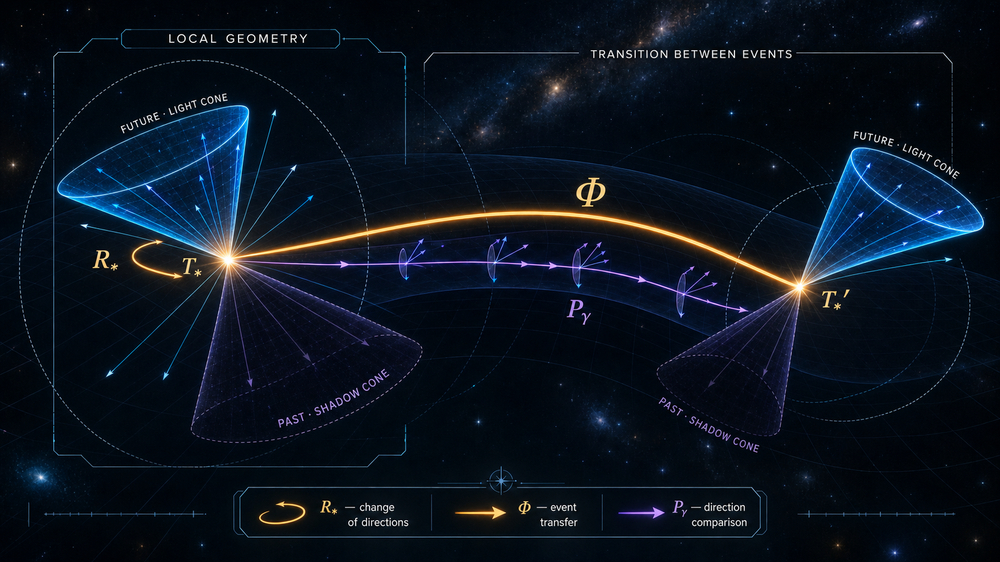

AR-01 · OPEN / RTI-01 · PASS / QTM-01 · NO-SMUGGLING PASS / PHYSICAL BRIDGE OPEN
AR-01 / ACTIVATION RELIC
Реликт активации:теневая граница и проблема времениActivation Relic:shadow boundary and the problem of time
Первичный интерфейс TMI ↔ теневая модель ↔ реляционное время холодных атомовTMI primary interface ↔ shadow model ↔ relational time with cold atoms
Если внедоменное условие δ₀ недоступно, наблюдатель внутри домена не получает δ₀ как таковое. Доступен только внутренний след взаимодействия — реликт R. Может ли такой след не только свидетельствовать об активации, но и упорядочивать внутренние события?If an extra-domain condition δ₀ is inaccessible, an observer inside the domain does not receive δ₀ itself. Only an internal interaction trace—the relic R—is available. Can such a trace both witness activation and order internal events?
SHADOW / НЕДОСТУПНЫЙ СЕКТОР
OBSERVED / ДОСТУПНЫЙ ДОМЕН D
δ₀
RD
δ₀ ∉ Obs(D) · J(shadow → D) · RD(δ₀) ∈ D · R orders τD
CONCEPTUAL TMI MAP · NOT AN IMAGE OF THE EXPERIMENT
S-01 / STATUS SEPARATION
Три уровня нельзя сливать.Three levels must not be merged.
Одинаковый словарь границы, тени и следа ещё не создаёт физического тождества. Статус каждого перехода указан отдельно.A shared vocabulary of boundary, shadow, and trace does not establish physical identity. Every transition is status-labeled separately.
01 / EXTERNAL RESULT
Холодно-атомный экспериментCold-atom experiment
В работе Giovanni Barontini изолированный бозе-эйнштейновский конденсат разделён оптическим барьером на наблюдаемый bright-сектор и ненаблюдаемый dark-сектор. Экспериментально построенное энтропийное время упорядочивает события наблюдаемого сектора, а эффективное уравнение Шрёдингера воспроизводит измеренную динамику.Giovanni Barontini partitions an isolated Bose-Einstein condensate with an optical barrier into an observed bright sector and an unobserved dark sector. An experimentally constructed entropic time orders events in the observed sector, and an effective Schrödinger equation reproduces the measured dynamics.
TMI предлагает читать доступный сектор как домен D, ненаблюдаемый сектор как тень, а измеримый обмен через границу как кандидата на внутридоменный реликт R. Это схема чтения: она не утверждается результатом эксперимента.TMI proposes reading the accessible sector as domain D, the unobserved sector as a shadow, and measurable exchange across the boundary as a candidate in-domain relic R. This is an interpretive map; it is not established by the experiment.
03 / NOT ESTABLISHED
Запрещённое повышение статусаForbidden status upgrade
Нельзя говорить, что dark-сектор является внешним наддоменом TMI, что обмен энтропией доказывает δ₀ или что реляционное время подтверждает первичный интерфейс. Статья проверяет физическую конструкцию внутреннего времени в конкретной системе.Do not claim that the dark sector is a TMI external superdomain, that entropy exchange proves δ₀, or that relational time confirms the primary interface. The paper tests a physical construction of internal time in a specific system.
M-01 / MINIMAL MODEL
Наблюдаем не источник, а его внутренний остаток.We observe not the source, but its internal remainder.
Минимальная запись сохраняет различие между условием, каналом и записью. Реликт не обязан однозначно восстанавливать происхождение.The minimal notation preserves the distinction between condition, channel, and record. A relic need not uniquely reconstruct its origin.
M-01A / DOMAIN
Домен и теньDomain and shadow
D ⊆ U Sh(D) := U ∖ D δ₀ ∈ Sh(D), δ₀ ∉ Obs(D)
U — полная модельная область; D — доступный наблюдателю домен; Sh(D) — его недоступное дополнение.U is the total modeled region; D is the observer-accessible domain; Sh(D) is its inaccessible complement.
M-01B / RELIC
Реликт активацииActivation relic
J : Sh(D) ⇢ D RD(δ₀) := TraceD(J, δ₀) ∈ D
J — допустимый канал взаимодействия через границу. R — запись этого взаимодействия внутри D, а не перенесённая копия δ₀.J is an admissible interaction channel across the boundary. R is the in-D record of that interaction, not a transported copy of δ₀.
Разные внедоменные условия могут оставлять один и тот же внутренний след. Поэтому реликт свидетельствует о классе совместимых причин, но не обязан раскрывать единственную причину.Different extra-domain conditions may leave the same internal trace. The relic may witness a class of compatible causes without revealing a unique cause.
M-01D / OPEN TMI CLAIM
Лемма представимостиRepresentation lemma
AccessibleD(δ₀) ⇒ ∃R∈D, ObservationD(δ₀) factors through R
Это целевая лемма, а не готовая теорема. Для неё нужны явные определения наблюдения, связи, факторизации и достаточности следа.This is a target lemma, not a completed theorem. It requires explicit definitions of observation, coupling, factorization, and trace sufficiency.
δ₀inaccessible condition→J / ∂Dboundary interaction→RDinternal record→τDordering of events
P-01 / PHYSICAL BRIDGE
Что именно переносится из статьи.What is actually carried over from the paper.
Переносится только структурная аналогия: разделение, взаимодействие, измеримый внутренний параметр и упорядоченная динамика.Only the structural analogy is carried over: partition, interaction, a measurable internal parameter, and ordered dynamics.
PHYSICAL PAPER
TMI READING
STATUS
Bright sector Наблюдаемая область конденсата.Observed region of the condensate.
D / accessible domain Область, внутри которой доступны записи.Region within which records are available.
ANALOGY
Dark sector Ненаблюдаемый сектор той же физической системы.Unobserved sector of the same physical system.
Sh(D) / shadow Недоступная сторона выбранного интерфейса.Inaccessible side of the selected interface.
ANALOGY, NOT SUPERDOMAIN
Entropy exchange Измеримая динамическая величина между секторами.Measurable dynamical quantity exchanged between sectors.
RD / candidate relic Кандидат на внутреннюю запись граничного взаимодействия.Candidate internal record of boundary interaction.
INTERPRETIVE MAP
Entropic time Внутренний параметр, устойчиво упорядочивающий измеренную динамику.Internal parameter that robustly orders measured dynamics.
τD Внутренний порядок, построенный из доступного следа.Internal ordering constructed from an accessible trace.
STRUCTURAL PARALLEL
T-02 / TWO-AXIS TIME
Один акт получает две координаты времени.One event receives two time coordinates.
Лабораторная ось сообщает, когда физически зарегистрировано событие. Реляционная ось сообщает, где это событие находится во внутреннем порядке, построенном из доступного обмена.The laboratory axis states when an event was physically recorded. The relational axis states where that event lies in an internal order constructed from accessible exchange.
T-02A / PRODUCT SPACE𝒯D ⊆ Tlab × Trel
Это пространство двух чтений одного процесса, а не заявление о двух независимых физических временах.This is a space of two readings of one process, not a claim that two independent physical times exist.
T-02B / TIME TOUCHTimeTouchD(e) :⇔ ∃(t,τ), LabRecorded(e,t) ∧ RelicOrdered(e,τ)
Событие связывает физическую запись с внутренним порядком, если обе координаты относятся к одному акту.An event connects a physical record to an internal order when both coordinates refer to the same act.
T-02C / RELIC CLOCKτD := Order(RD)
В TMI реликт становится кандидатом на внутренний носитель порядка. В статье эту роль играет операционально построенное энтропийное время; равенство между ними не заявляется.In TMI, the relic becomes a candidate carrier of internal order. In the paper, that role is played by operationally constructed entropic time; no identity between them is claimed.
RTI-01 / RELATIVE TEMPORAL INTERFACE
Время двусторонне. Мировая линия выбирает ход.Time is two-sided. A worldline selects a path.
Это не новая модель вместо TimeTouch. RTI-01 добавляет к двум уже существующим чтениям события локальные future/past-секторы и явное правило сравнения соседних интерфейсов.This is not a replacement for TimeTouch. RTI-01 adds local future/past sectors and an explicit rule for comparing neighboring interfaces to the two existing readings of an event.

ПУБЛИКАЦИОННАЯ КАРТА · локальные оси у T* и T*′ наклонены и не обязаны лежать в одной плоскости. Световой конус показывает future-сектор; теневой конус — past-сектор. Иллюстрация не является диаграммой доказанного пространства-времени.PUBLICATION MAP · the local axes at T* and T*′ are tilted and need not lie in one plane. The light cone marks the future sector; the shadow cone marks the past sector. This illustration is not a diagram of a proven spacetime.
RTI-01A / LOCAL STRUCTURE
Интерфейс содержит обе стороныThe interface contains both sides
𝒯p = Cp− ∪ {p} ∪ Cp+ Cp+ ∩ Cp− = ∅
Односторонним является выбранный шаг γ, а не вся локальная временная структура.The selected step γ is one-sided; the whole local temporal structure is not.
RTI-01B / EXPLICIT COMPARISON
Соседние будущие не отождествляютсяNeighboring futures are not identified
Θp←q : Direction(q) → Direction(p)
Без Θ нельзя корректно сказать, куда будущее q смотрит относительно p. Обратимость и связность пока не предполагаются.Without Θ it is not meaningful to say where q's future points relative to p. Invertibility and connection compatibility are not yet assumed.
RTI-01C / PRESERVED READING
Будущее читается как будущееFuture reads as future
Θp←q(Cq+) ⊆ Cp+ σ(p,q)=+1
Это сохраняющее ориентацию чтение двух локальных структур.This is an orientation-preserving reading of two local structures.
RTI-01D / OPEN REVERSAL
Будущее соседа читается как моё прошлоеA neighbor's future reads as my past
Θp←q(Cq+) ⊆ Cp− σ(p,q)=−1
Lean принимает такой разворот как явный свидетель. Его физическое происхождение — отдельная открытая гипотеза.Lean accepts such a reversal as explicit witness data. Its physical origin is a separate open hypothesis.
KERNEL CHECKED
Различение непротиворечивоThe distinction is consistent
Одно сравнение не может одновременно читать непустой future-сектор целиком как future и целиком как past.One comparison cannot read the same nonempty future sector wholly as future and wholly as past.
KERNEL CHECKED
TimeTouch не дублируетсяTimeTouch is not duplicated
Оба интерфейса повторно используют существующий TLFL TimeTouch и его физическую/внутреннюю пару координат.Both interfaces reuse the existing TLFL TimeTouch and its physical/internal coordinate pair.
NEGATIVE AUDIT
1 год против 1000 лет — ещё не разворот1 year versus 1000 years is not yet reversal
Различное собственное время между общей отправкой и встречей совместимо с Θ, сохраняющим будущее. Дифференциальное старение само по себе не вынуждает σ=−1.Unequal proper time between common departure and reunion is compatible with a future-preserving Θ. Differential aging alone does not force σ=−1.
RTI KERNEL · 17058ba82066732733fec34ea5f305f380495482 / QUANTUM BOUNDARY · 874e7b1 / VAMPIRE 5.0.1 + E 3.2.5 · 2/2 SZS STATUS THEOREM.Два ATP-зеркала проверяют непересечение future/past и запрет скрытого разворота в полностью сохраняющем семействе ветвей. Они не доказывают физический разворот.Two ATP mirrors check future/past disjointness and the exclusion of hidden reversal in an all-preserving branch family. They do not prove physical reversal.
Вычисление становится читаемым через интерфейс.Computation becomes readable through an interface.
Сет Ллойд даёт физический нижний слой: Вселенную можно рассматривать как квантовый компьютер, а P-CTC задаёт нелинейную постселектированную карту состояния. Наш следующий слой — не «ещё одна машина Ллойда», а явная математика интерфейса, который делает переход различимым для самой системы.Seth Lloyd supplies the physical lower layer: the universe can be regarded as a quantum computer, while a P-CTC defines a nonlinear post-selected state map. Our next layer is not “another Lloyd machine,” but an explicit interface mathematics that makes a transition distinguishable to the system itself.
Вселенная вычисляет собственную динамикуThe universe computes its own dynamics
ρt ⟶ ρt+1 = ℰt(ρt)
Это наша схематическая запись идеи физического вычисления, а не дословная формула Ллойда. Его обзор формулирует более осторожный тезис: Вселенную можно рассматривать как гигантский квантовый компьютер.This is our schematic notation for physical computation, not a verbatim Lloyd equation. His review makes the more careful claim that the universe can be regarded as a giant quantum computer.
ИСТОЧНИК · THE UNIVERSE AS QUANTUM COMPUTER · ARXIV:1312.4455SOURCE · THE UNIVERSE AS QUANTUM COMPUTER · ARXIV:1312.445502 / UPSTREAM · P-CTC
Постселекция задаёт нелинейную карту состоянияPost-selection defines a nonlinear state map
CU := TrCTC[U] 𝒩U[ρ] := CUρCU† / Tr[CUρCU†]
В P-CTC телепортация с постселекцией моделирует канал из будущего в прошлое. Нормировка определена только при ненулевом весе постселекции; нулевые самопротиворечивые истории исключаются.In a P-CTC, teleportation with post-selection models a channel from the future to the past. The normalization is defined only for nonzero post-selection weight; zero-amplitude self-contradictory histories are excluded.
LLOYD ET AL. · PHYS. REV. D 84, 025007 · EQ. 9
03 / OUR LIFT · TMI + RTI
Интерфейс делает различие читаемымThe interface makes a distinction readable
Ut ⟶It Ut+1 Readp ∘ 𝒥p←q = Θp←q ∘ Readq
It — наша интерфейсная гипотеза: граница, условия допустимости, передача различия и его прочтение. 𝒥 переносит квантовое состояние; Θ сравнивает temporal-reading секторы. Их согласованность — новый мост, а не результат Ллойда.It is our interface hypothesis: boundary, admissibility conditions, transmission of a distinction, and its reading. 𝒥 transports a quantum state; Θ compares temporal-reading sectors. Their compatibility is a new bridge, not a Lloyd result.
AUTHORIAL EXTENSION · OPEN PHYSICAL IDENTIFICATION
LLOYD / PHYSICAL LOWER LAYERВселенная вычисляет себя.The universe computes itself.КОНЦЕПТУАЛЬНОЕ СЖАТИЕ ИДЕИ ЛЛОЙДА · НЕ ЦИТАТАCONCEPTUAL COMPRESSION OF LLOYD'S IDEA · NOT A QUOTATION
TMI / INTERFACE LIFTВселенная может вычислять себя лишь через интерфейсы, делающие её собственные различия читаемыми ей самой.The universe can compute itself only through interfaces that make its own distinctions readable to itself.НАША ГИПОТЕЗА · НЕ РЕЗУЛЬТАТ ЛЛОЙДАOUR HYPOTHESIS · NOT A LLOYD RESULT
L-RTI-01 / LOCAL READOUTp=T*, q=T*′ ℋp, ℋq ΠF(x)ΠP(x)=0
Каждый интерфейс x∈{p,q} получает собственные future/past-проекторы. Непересечение — квантовый аналог локального закона RTI-01.Each interface x∈{p,q} receives its own future/past projectors. Their disjointness is the quantum analogue of the local RTI-01 law.
L-RTI-02 / ADMISSIBILITYwU(ρ) := Tr[CUρCU†] > 0
До любого чтения проверяется допустимость постселекции. При wU(ρ)=0 нормированная P-CTC-карта не определена.Post-selection admissibility is checked before any reading. At wU(ρ)=0 the normalized P-CTC map is undefined.
Кандидат 𝒥 может наследовать форму 𝒩U, но это требует физической идентификации входа, выхода, CTC-подсистемы и локальных интерфейсов.A candidate 𝒥 may inherit the form of 𝒩U, but this requires a physical identification of input, output, the CTC subsystem, and the local interfaces.
Разворот заявляется только явным свидетелем: состояние, читаемое как future в q, после физического канала читается как past в p. Ни P-CTC-формула сама по себе, ни 1<1000 этого не доказывают.Reversal is asserted only by an explicit witness: a state read as future at q is read as past at p after the physical channel. Neither the P-CTC formula alone nor 1<1000 proves this.
Мы уже внутри машины времени?Are we already inside a time machine?
Провокация разбирается на три уровня: стандартное различное старение, относительное чтение локальных интерфейсов и сильная квантовая reversing-ветвь.The provocation separates into three levels: standard differential aging, relative reading of local interfaces, and a strong quantum reversing branch.
01 / GR · обе мировые линии направлены A→B; различается накопленное собственное время, а не причинная ориентация.both worldlines point from A to B; accumulated proper time differs, not causal orientation.
GINF-01 · LEAN PASS · 17 AXIOM-FREE REPORTS · формализованы граница выборки, шаг DL-04 и инвариант кадра; точная JS/tanh-арифметика и физический тезис о жизни остаются открыты.sample boundary, the DL-04 step, and view-frame invariance are formalized; exact JS/tanh arithmetic and the physical claim of life remain open.
WORLDLINE γL
Лина: один годLina: one year
γL : A → B τ[γL] = 1
Будущенаправленный маршрут в сильном гравитационном поле. Число — модельный контраст, не расчёт конкретной орбиты.A future-directed route through a strong gravitational field. The number is an audit contrast, not a calculation for a specified orbit.
B
WORLDLINE γE
Земля: тысяча летEarth: one thousand years
γE : A → B τ[γE] = 1000
Та же отправка A и та же встреча B, но другой накопленный инвариант пути.The same departure A and reunion B, but a different accumulated path invariant.
STANDARD GR
Да: путь в будущееYes: travel into the future
Лина достигает поздней земной даты, накопив меньше собственного времени. Это физически содержательный односторонний смысл «машины времени».Lina reaches a late Earth date after accumulating less proper time. This is the physically meaningful one-way sense of a “time machine.”
RTI COMPARISON
Не автоматически: прошлоеNot automatically: the past
Обе мировые линии идут A→B. Различное старение не означает, что Земля вошла в причинное прошлое Лины или что σ стало −1.Both worldlines run A→B. Unequal aging does not mean Earth entered Lina's causal past or that σ became −1.
STRONG QTM
Открыто: reversing-ветвьOpen: a reversing branch
Сильный тезис требует физически активной ветви Θb(Cq+)⊆Cp− и наблюдаемого отличия от обычной ОТО.The strong claim requires a physically active branch Θb(Cq+)⊆Cp− and an observable distinct from ordinary GR.
RTI-02 / QUANTUM COMPARISON BOUNDARY
Квантовое слово не создаёт разворотThe word quantum does not create reversal
Lean оставляет амплитуды абстрактными и доказывает no-smuggling boundary: полностью сохраняющее семейство активных ветвей не является reversal-bearing кандидатом. Гильбертово пространство, нормировка, интерференция, динамика и измерение остаются открыты.Lean leaves amplitudes abstract and proves the no-smuggling boundary: an all-preserving active branch family is not a reversal-bearing candidate. Hilbert space, normalization, interference, dynamics, and measurement remain open.
Полная статья · RU/ENComplete article · RU/EN
Полный текст отделяет доказанную ОТО, RTI-язык сравнения и сильную квантовую гипотезу; включает мысленный эксперимент, проверенные теоремы, источники, обязательства и красную границу.The full text separates established GR, the RTI comparison language, and the strong quantum hypothesis; it includes the thought experiment, checked theorems, sources, obligations, and the red boundary.
ТОЧНЫЙ ОТВЕТ:PRECISE ANSWER:Мы живём в мире релятивистских машин в будущее. Квантовая двусторонняя машина времени остаётся формализованной гипотезой с открытым физическим мостом.We inhabit a world of relativistic machines into the future. A two-way quantum time machine remains a formalized hypothesis with an open physical bridge.
R-01 → R-12 / SOURCES
Опоры поддерживают физический слой, но не доказывают TMI-переход.The sources support the physical layer, not the TMI transition.
Основная статья, её открытые данные, первичные работы по проблеме времени, квантовому вычислению и P-CTC, а также опубликованный канон TMI собраны отдельно от новых RTI-гипотез.The focal paper, its open data, primary works on the problem of time, quantum computation, and P-CTCs, together with the published TMI canon, are kept separate from the new RTI hypotheses.
R-01 · PHYSICAL REVIEW RESEARCH · 2026
Giovanni Barontini · Testing the Problem of Time with Cold Atoms
Рецензируемая статья: наблюдаемый и ненаблюдаемый секторы, энтропийное время и эффективное уравнение Шрёдингера.Peer-reviewed paper: observed and unobserved sectors, entropic time, and an effective Schrödinger equation.
DOI ↗COVERS · EXPERIMENT · ENTROPIC TIME · MEASURED EVOLUTIONR-02 · ARXIV:2509.07745
Testing the Problem of Time with Cold Atoms · author manuscript
Открытая версия авторской работы для чтения математической и экспериментальной конструкции.Open author manuscript for the mathematical and experimental construction.
ARXIV ↗COVERS · FULL METHOD · MODEL · FIGURESR-03 · ZENODO · 2026
Data used for the manuscript
Открытый набор данных к рисункам статьи. Он позволяет отделить экспериментальный материал от нашего чтения.Open dataset supporting the paper's figures. It keeps experimental material separate from our reading.
ZENODO DATA ↗COVERS · EMPIRICAL RECORD · REPRODUCIBILITYR-04 · PAGE & WOOTTERS · 1983
Evolution without evolution
Динамическая эволюция закрытой стационарной системы описывается через зависимость от показаний внутренних часов.Dynamical evolution of a closed stationary system is described through dependence on internal clock readings.
PHYS. REV. D ↗COVERS · RELATIONAL TIME · INTERNAL CLOCKR-05 · DEWITT · 1967
Quantum Theory of Gravity. I. The Canonical Theory
Каноническая постановка, в которой проблема внешнего параметра времени становится фундаментальной.Canonical setting in which the problem of an external time parameter becomes fundamental.
PHYSICAL REVIEW ↗COVERS · WHEELER-DEWITT CONTEXT · PROBLEM OF TIMER-06 · GEMSHEIM & ROST · 2023
Emergence of Time from Quantum Interaction with the Environment
Первичная современная работа о реляционном времени при явном взаимодействии системы и окружения.Primary modern work on relational time with explicit system-environment interaction.
Опубликованный авторский канон для SelfModelTimeAxis, NoBackwardStep и топологии времени. Он связывает RTI-01 с существующей TMI-линией, но сам по себе не доказывает физический разворот соседнего future-сектора.Published authorial canon for SelfModelTimeAxis, NoBackwardStep, and time topology. It connects RTI-01 to the existing TMI line but does not by itself prove physical reversal of a neighboring future sector.
DOI ↗COVERS · AUTHOR TIME MODEL · TMI CANON · NOT RTI PROOFR-08 · EINSTEIN · 1916
Die Grundlage der allgemeinen Relativitätstheorie
Первичная работа-основание ОТО. Она поддерживает геометрический слой собственного времени, но не RTI-карту сравнения и не квантовую reversing-ветвь.The foundational primary GR paper. It supports the geometric proper-time layer, not the RTI comparison map or a quantum reversing branch.
ANNALEN DER PHYSIK ↗COVERS · GENERAL RELATIVITY FOUNDATION · NOT QTM PROOFR-09 · LLOYD · 2013
The universe as quantum computer
Обзор физического вычисления: Вселенную можно рассматривать как гигантский квантовый компьютер. Он поддерживает нижний вычислительный слой нашего моста, но не TMI-тезис о читаемости и интеллекте.A review of physical computation: the universe can be regarded as a giant quantum computer. It supports the lower computational layer of our bridge, not the TMI claim about readability and intelligence.
ARXIV ↗COVERS · PHYSICAL COMPUTATION · NOT INTERFACE READABILITYR-10 · LLOYD ET AL. · 2011
The quantum mechanics of time travel through post-selected teleportation
Первичная развёрнутая работа P-CTC: постселектированная телепортация, сохранение корреляций и нормированная нелинейная карта 𝒩[ρ]=CρC†/Tr[CρC†].The primary full P-CTC treatment: post-selected teleportation, preservation of correlations, and the normalized nonlinear map 𝒩[ρ]=CρC†/Tr[CρC†].
PHYS. REV. D ↗COVERS · P-CTC DYNAMICS · POST-SELECTION · EQ. 9R-11 · LLOYD ET AL. · 2011
Closed timelike curves via post-selection: theory and experimental demonstration
Краткая рецензируемая постановка и экспериментальная симуляция предсказаний P-CTC. Симуляция не является созданием физической замкнутой времениподобной кривой.A concise peer-reviewed formulation and experimental simulation of P-CTC predictions. The simulation is not the creation of a physical closed timelike curve.
PHYS. REV. LETTERS ↗COVERS · P-CTC MODEL · EXPERIMENTAL SIMULATION · NOT A PHYSICAL CTCR-12 · LLOYD · 1988 / 2013
Black Holes, Demons, and the Loss of Coherence
Опубликованная глава диссертации «How complex systems get information and what they do with it». Она документирует близость информационной территории, но не выводит TMI-цепочку «читаемость → самомодель → интеллект».A published chapter of the thesis “How complex systems get information and what they do with it.” It documents the neighboring information-theoretic territory but does not derive the TMI chain “readability → self-model → intelligence.”
ARXIV ↗COVERS · COMPLEX-SYSTEM INFORMATION · BLACK-HOLE CONTEXT · NOT TMI PROOF
Правило источников: R-01–R-06 и R-08–R-12 подтверждают только собственные физические и математические утверждения. R-07 фиксирует опубликованный авторский канон TMI. Термины «реликт активации», «теневая граница TMI», отображение δ₀ ↦ RD, интерфейс It, условие Readp∘𝒥=Θ∘Readq и гипотеза σ(p,q)=−1 остаются авторской исследовательской рамкой.Source rule: R-01–R-06 and R-08–R-12 support only their own physical and mathematical claims. R-07 records the published authorial TMI canon. “Activation relic,” “TMI shadow boundary,” the map δ₀ ↦ RD, interface It, the condition Readp∘𝒥=Θ∘Readq, and the hypothesis σ(p,q)=−1 remain part of the authorial research framework.
L-01 / LEAN STATUS
Скомпилированное ядро и открытый физический мост.Compiled core and open physical bridge.
Факторизация реликта AR остаётся целевой леммой. TimeTouch, RTI-01, квантовая no-smuggling boundary и GINF-01 уже проверены Lean; физический разворот, точная JS/tanh-арифметика и тезис о жизни не доказаны.AR relic factorization remains a target lemma. TimeTouch, RTI-01, the quantum no-smuggling boundary, and GINF-01 are Lean-checked; physical reversal, exact JS/tanh arithmetic, and the claim of life are not proven.
TODO-01
Domain
Определить полную область U, доступный поддомен D и предикат внутренней наблюдаемости.Define total region U, accessible subdomain D, and internal observability.EXIT · DOMAIN LAWS CHECKED
TODO-02
Shadow
Определить тень относительно выбранного интерфейса, не отождествляя её с физическим внешним миром.Define the shadow relative to a selected interface without identifying it with a physical external world.EXIT · SHADOW IS RELATIVE TO D
TODO-03
ActivationRelic
Задать внутренний носитель реликта, канал происхождения и отношение совместимости с внедоменным условием.Define the relic's internal carrier, provenance channel, and compatibility relation with an extra-domain condition.EXIT · RELIC LIVES IN D
TODO-04
Factorization lemma
При явных условиях связи доказать, что всякая внутренняя наблюдаемость δ₀ факторизуется через некоторый реликт R в D.Under explicit coupling assumptions, prove that every internal observation of δ₀ factors through some relic R in D.EXIT · NO DIRECT EXTRA-DOMAIN OBSERVATION
COMPILED BASE
TwoAxisTime / TimeTouch
Пара лабораторной и внутренней координат и свидетель TimeTouch повторно используются как каноническая основа RTI-01.The laboratory/internal coordinate pair and TimeTouch witness are reused as the canonical RTI-01 base.LEAN PASS · EXISTING TLFL SURFACE
RTI-01 / COMPILED
RelativeTemporalInterface
Локальные future/past-предикаты, явное сравнение, относительный разворот, воссоединение путей и конечный отрицательный аудит.Local future/past predicates, explicit comparison, relative reversal, path reunion, and a finite negative audit.LEAN PASS · PHYSICAL BRIDGE OPEN
RTI-02 / COMPILED
QuantumComparisonBoundary
Ветви, абстрактные амплитуды, активность и сравнения; доказан запрет скрытого разворота для полностью сохраняющего семейства.Branches, abstract amplitudes, activity, and comparisons; hidden reversal is excluded for an all-preserving family.LEAN + ATP PASS · QUANTUM DYNAMICS OPEN
GINF-01 / COMPILED
SampledHypergraphImpulse
Отделены Fin 4000 и Fin 10¹², доказана неполнота выборки, явный шаг DL-04, рост сертификата и независимость модели от вращения, масштаба и раскладки 30/70.Fin 4000 is separated from Fin 10¹²; sample incompleteness, the explicit DL-04 step, certificate growth, and model invariance under rotation, zoom, and the 30/70 layout are checked.LEAN PASS · 17 AXIOM-FREE REPORTS · JS/PHYSICS OPEN
-- AR target signatures only; not compiled evidence.
Domain U
Shadow D
ActivationRelic D δ₀
RepresentsWithin D R δ₀
FactorsThrough observation R
TARGET:
Coupled D δ₀ → InternallyObservable D δ₀ →
∃ R : ActivationRelic D δ₀,
RepresentsWithin D R δ₀ ∧ FactorsThrough observation R
-- COMPILED SEPARATELY:
-- TMI.ActivationRelicTwoAxisTime
-- TMI.InterfaceFoundations.RelativeTemporalInterface
-- TMI.InterfaceFoundations.RelativeTemporalInterfaceAudit
-- TMI.InterfaceFoundations.QuantumComparisonBoundary
-- TMI.InterfaceFoundations.QuantumComparisonBoundaryAudit
-- TMI.InterfaceFoundations.SampledHypergraphImpulse
-- TMI.InterfaceFoundations.SampledHypergraphImpulseAudit